WORK・醫療科技
針對移動與居家情境下的短暫小睡困擾，規劃「頸枕裝置＋App＋服務」三者整合的智慧睡眠方案，透過睡前快速啟動、睡中沉浸引導、睡後個人化喚醒的完整體驗，協助忙碌的現代人在有限的時間裡，睡得更安心、更有品質。
合作對象
佳綸生技
專案時間
2019
專案類型
App
負責內容
設計策略、分析研究、資訊架構、專案管理、UI設計
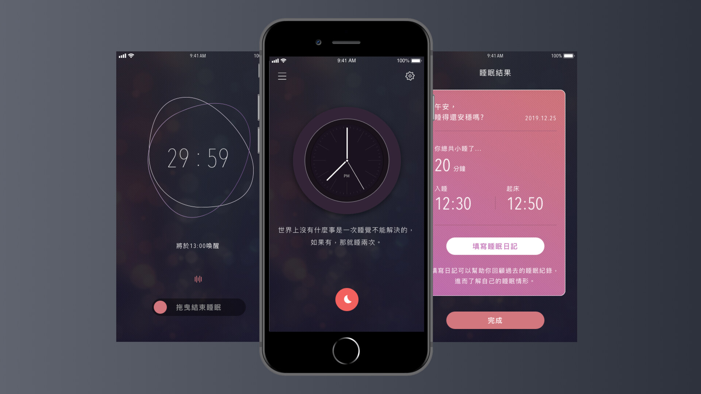
睡眠倒數、睡眠結果、睡眠日記三大核心畫面，構成 Dozze 的完整睡眠體驗迴圈。
成果與結論
本專案為公司內部的創業試驗，旨在善用既有企業資源，打造可驗證市場反應的 MVP 產品。我全權主導線上服務的完整發展流程，獨立完成從使用者研究、產品概念定位到介面設計的端到端（End-to-End）實踐。
三階段整合睡眠服務
%
小睡準備流程時間縮短
%
概念測試用戶滿意度
本專案重點
隨著「睡眠負債」議題受到廣泛討論，各國睡眠經濟規模持續擴大，從枕頭租借、睡眠顧問到穿戴裝置，各式產品與服務紛紛出現。佳綸生技作為深耕健康材料領域的企業，希望藉由頸枕裝置與行動應用的軟硬整合，將既有的研發優勢延伸至智慧睡眠場域，尤其聚焦在移動情境中最容易被忽略的「小睡」時刻。本專案在此脈絡下，展開從研究到設計的完整流程。
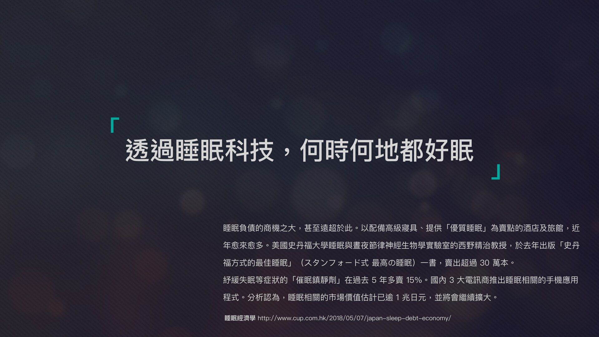
根據報導，日本睡眠周邊產業規模已跨越兆元門檻，反映「睡眠經濟」正持續擴張，也成為本專案切入市場的重要背景參考。
本專案設計流程
本專案從深度訪談與田野調查出發，交叉比對次級市場資料驗證議題價值，收斂為軟硬整合的核心概念，落地為貫穿睡前、睡中、睡後的完整體驗設計，最後延伸出對應的視覺風格提案。
透過深度訪談與田野調查，蒐集用戶在移動與居家情境下的小睡痛點。
以次級資料佐證睡眠經濟趨勢與商機規模，確認議題的市場價值。
收斂用戶洞察與核心概念，定義軟硬整合的睡眠服務方向。
拆解睡前、睡中、睡後三階段體驗，逐一落地對應的功能設計。
依情境色彩發展三套視覺風格，提案討論最終定調的品牌調性。
深度訪談與田野調查
以半結構式深度訪談搭配線上田野調查展開研究，範疇涵蓋旅行習慣、午睡習慣與睡眠背景。我們避免封閉式問答，運用層層追問的技巧促使受訪者分享具體情境與細節，精準捕捉使用者最真實的痛點與行為邏輯。
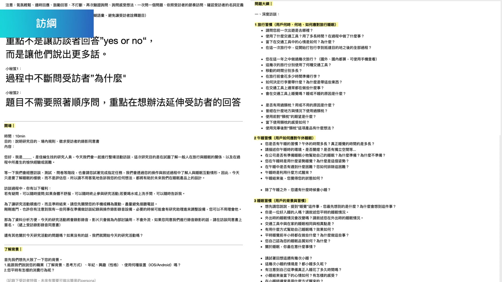
訪綱以旅行習慣、午睡習慣、睡眠背景三大主題展開，過程中不斷追問「為什麼」。
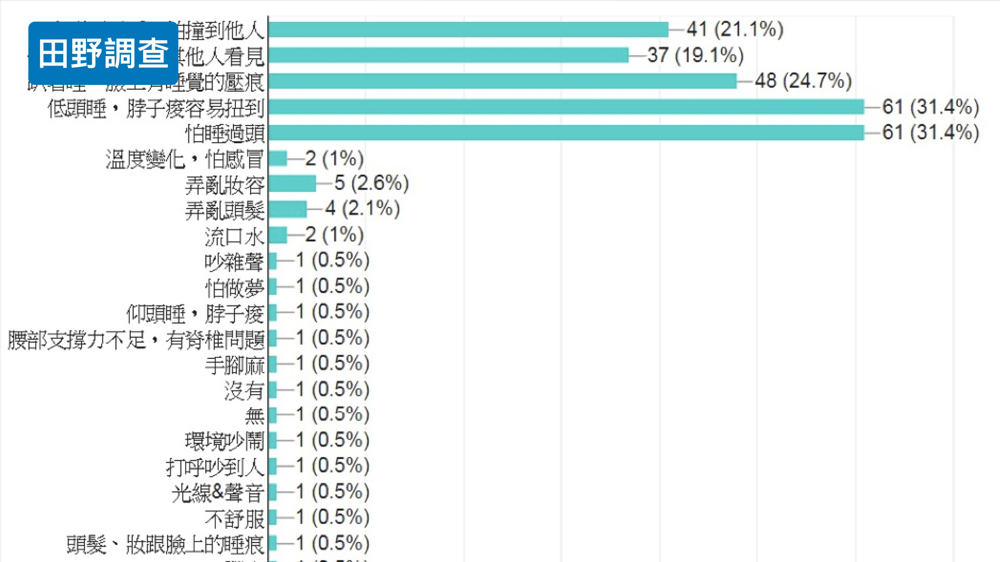
「低頭睡導致脖子痠痛」是最多受訪者提及的困擾，其次是趴睡壓痕與東倒西歪怕撞到他人。
調查中，「低頭睡導致脖子痠痛」是最多受訪者提及的困擾，其次是趴睡壓痕與東倒西歪怕撞到他人，顯示小睡的生理不適是普遍現象。
調查也發現女性在長程移動的次數平均比男性多出2至3次，也更願意在睡眠周邊小物上花費，顯示這是一群被市場忽略的潛在用戶。
次級市場研究
本專案整合第一手訪談與次級文獻分析（涵蓋天下雜誌、BBC、日經中文網等權威媒體），交叉驗證睡眠經濟的市場潛力與使用者痛點，進一步聚焦並確認「小睡體驗優化」為本專案的核心發展方向。
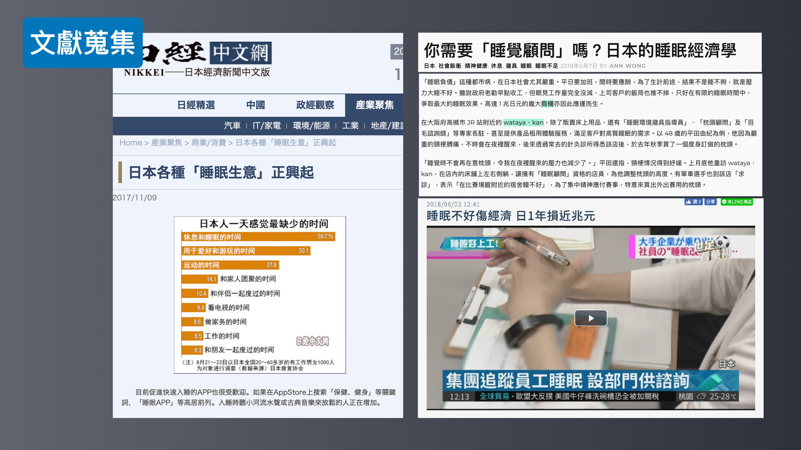
彙整多篇睡眠經濟相關報導，包括日本睡眠周邊產業興起、企業導入睡眠顧問服務等案例，作為市場定位的參考依據。
多篇報導指出，睡眠不足已從個人健康問題延伸為企業生產力與社會經濟的損失來源，帶動周邊產業快速成長。
日本市場已出現枕頭租借、睡眠顧問等多元服務，顯示消費者願意為「更好的睡眠」付費，也為本專案的商業定位提供參考。
用戶洞察與人物誌
本專案將主要用戶收斂為一群年齡27至41歲、常態性移動或需要午休補眠的職場女性，她們多為北漂青年、護理人員或行政內勤人員，共同的困擾是脖子痠痛、睡相尷尬與擔心睡過頭。
這群用戶未必屬於同一職業或年齡層，真正的共同點是她們都在「移動中」或「工作空檔」需要補眠，情境才是設計的起點。
她們在生理上容易因姿勢不良而痠痛，心理上則因擔心睡過頭而無法真正放鬆，這也是後續設計最需要回應的核心矛盾。
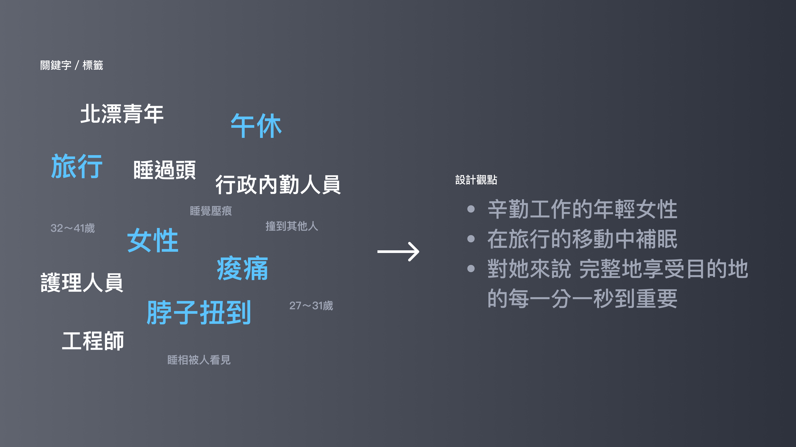
從訪談與調查中浮現的用戶特徵與情境關鍵字，收斂為本專案的主要用戶輪廓。
目標
為這群辛勤工作、移動中補眠的女性，
打造一個貼身的智慧睡眠夥伴，
讓每一次小睡都安心、舒適。
現況與問題
綜合質性調查結果，受訪者對小睡的負面體驗主要源於雙重痛點：生理上的姿勢不適（肌肉痠痛），以及心理上的時間焦慮（擔心睡過頭）。兩者疊加下，讓「小睡」失去了休息的本質，反而帶來提心吊膽的心理壓力。
概念解法
為了回應「打造貼身智慧睡眠夥伴」的目標，本專案將解法定調為「頸枕裝置＋App＋服務」三者整合：頸枕負責承接生理層面的舒適支撐，App負責睡前引導、睡中陪伴與睡後喚醒的完整體驗，服務層則透過睡眠日記與社交分享延續用戶關係，三者共同回應「安心託付」這個核心目標。
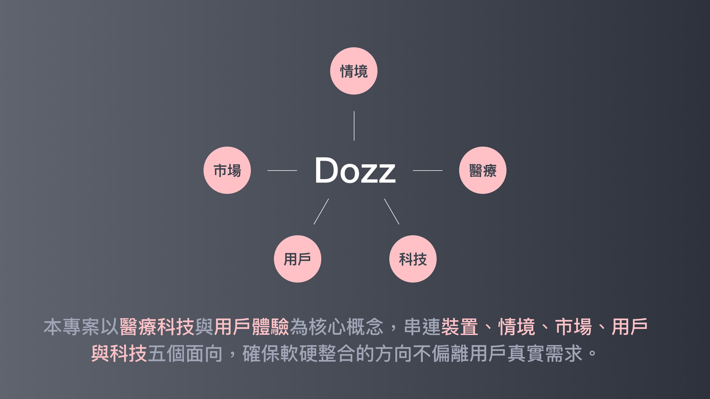
本專案以醫療科技與用戶體驗為核心概念，串連裝置、情境、市場、用戶與科技五個面向，確保軟硬整合的方向不偏離用戶真實需求。
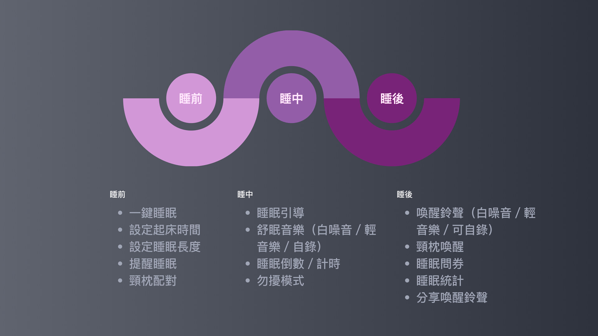
以睡前、睡中、睡後三階段拆解完整的睡眠體驗，並分別對應不同的功能設計重點。
綜合上述概念，本專案將完整的睡眠體驗拆解為睡前、睡中、睡後三個階段，讓每個階段都有對應的功能設計回應用戶需求。
資訊架構與流程設計
收斂三大方向後，本專案先以功能地圖釐清資訊架構，再針對「小睡」、「情境小睡」、「頸枕配對」等核心情境逐一繪製使用流程，確保後續介面設計有清楚的骨架可以依循。
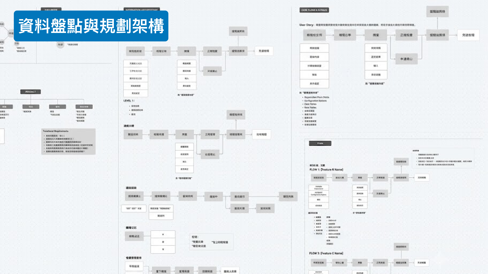
以「IM睡眠科技」為核心的功能地圖，拆解出睡眠、紀錄、提醒、頸枕、用戶管理五大模組，並針對「我想小睡＿分鐘」「情境小睡」「頸枕配對」等關鍵情境，逐一展開詳細的使用流程圖。
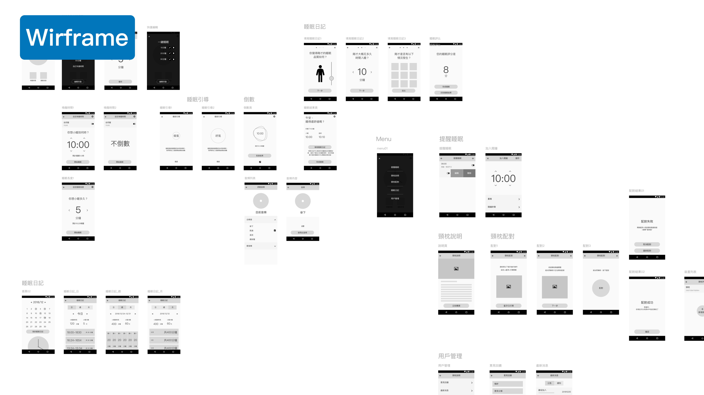
低保真 Wireframe，涵蓋鬧鐘選擇、睡眠引導、倒數、睡眠日記、頸枕配對與用戶管理等畫面，用來驗證流程與資訊架構是否合理，再進入視覺設計階段。
在畫線框稿之前，先以功能地圖釐清睡眠、紀錄、提醒、頸枕、用戶管理五大模組的關係，避免後續設計見樹不見林。
以灰階 Wireframe 快速驗證「小睡」、「情境小睡」、「頸枕配對」等關鍵流程是否合理，再進入視覺設計，降低後期大幅修改的風險。
設計說明
睡前流程以「快速啟動」為核心，用戶只需兩個步驟即可完成小睡設定，並可透過頸枕配對啟動個人化的睡眠情境，降低小睡前的操作門檻。
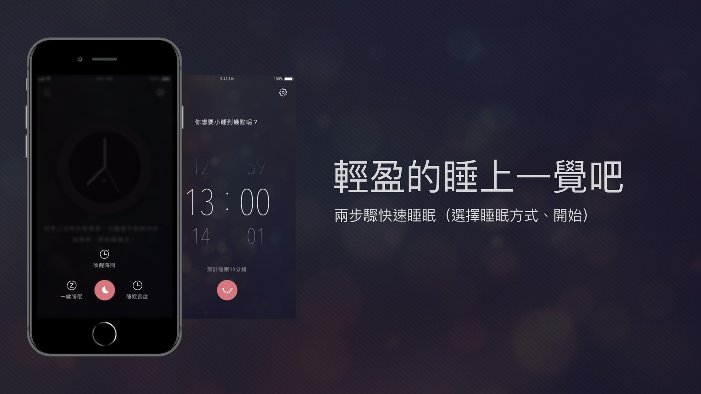
兩步驟即可完成小睡設定——選擇睡眠方式、按下開始，讓忙碌的用戶不必在複雜選項中猶豫。
用戶可直接選擇「想睡到幾點」或「想睡多久」，App 隨即進入睡眠引導，大幅縮短小睡前的準備時間。
完成頸枕配對後，裝置與App即可連動，依照用戶的睡眠長度與偏好，自動調整震動喚醒與感應設定。
根據國外研究，調節呼吸有助於提升睡眠品質，因此在正式進入睡眠倒數前，加入一段輕量的引導式呼吸練習，讓身心先慢下來，再進入小睡狀態。
設計說明
睡中階段著重「五感沉浸」，讓實體頸枕與App共同營造舒眠情境，並提供勿擾模式，避免惱人通知打斷小睡時光。
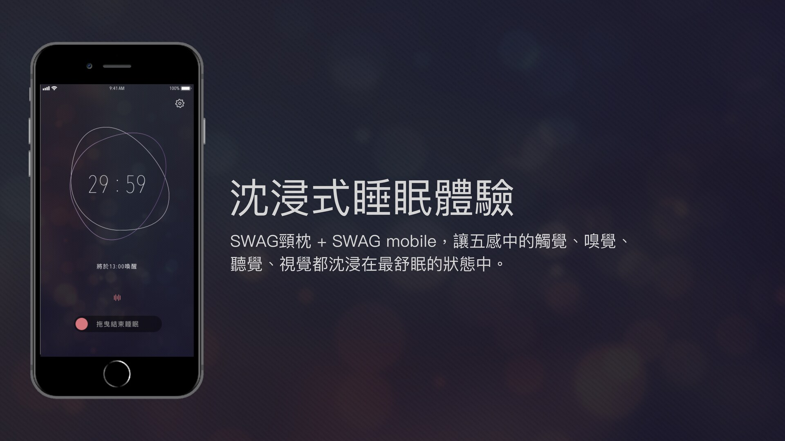
睡眠倒數畫面搭配舒眠音樂與震動提示，讓頸枕與App共同營造沉浸式的小睡情境。
觸覺上由頸枕提供舒適支撐，聽覺上可選擇白噪音或輕音樂，視覺上以沉穩的深色介面降低干擾，共同延伸沉浸感。
睡眠倒數期間自動切換為勿擾模式，過濾非必要通知，避免用戶因外部干擾而中途醒來。
睡眠倒數畫面搭配幽默的心情小語，像是「世界上沒有什麼事是一次睡覺不能解決的，如果有，那就睡兩次」，讓等待入睡的過程多一點會心一笑的陪伴感。
設計說明
睡後從「喚醒」功能延伸出「記錄」與「分享」行為—不但可自錄喚醒鈴聲，也能將幽默的鈴聲分享給總是睡過頭的朋友，讓喚醒不只是功能，更是一種社交互動。
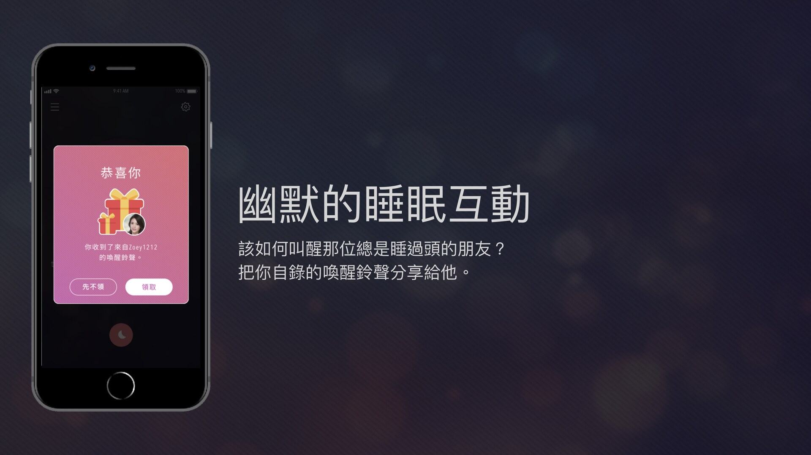
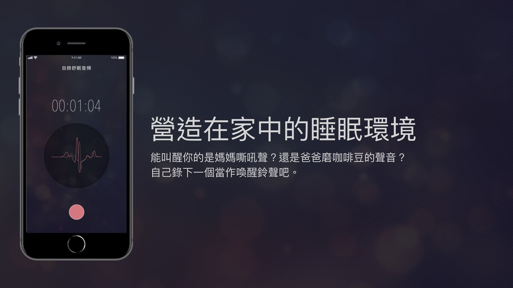
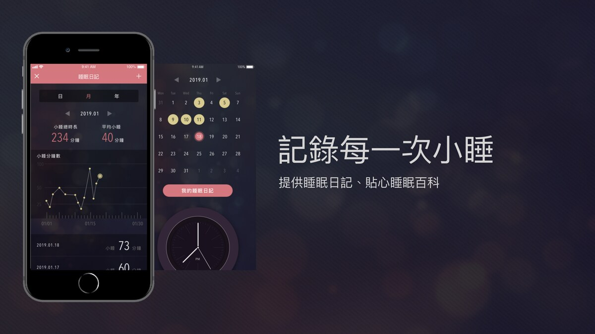
用戶可將自己錄製的喚醒鈴聲分享給朋友，也能隨時回顧自錄鈴聲與睡眠日記，讓「叫醒」延伸為記錄與分享的完整體驗。
用戶可自行錄製環境音效（如家人的聲音）作為喚醒鈴聲，讓睡醒的瞬間更貼近真實生活情境。
每次小睡結束後，可依照匹茲堡睡眠質量量表（PSQI）填寫簡短問卷並自動生成睡眠日記，讓每一次的睡眠回饋都有學理依據，協助用戶逐步累積對自己睡眠模式的認識。
每次完成小睡，都能為專屬的睡眠牧場增添一株植物或一隻小動物，讓睡眠紀錄從「被追蹤」變成「被養成」，用戶更有動機持續使用、養成規律的小睡習慣。
重點畫面總覽
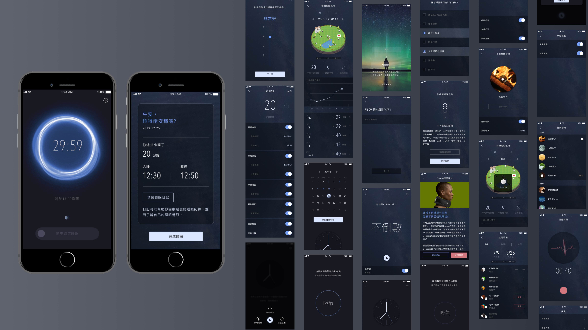
配色風格設定
在確定功能後，本階段以「情境色彩」為出發點，從極光、日常穿搭、月夜三種生活場景提煉出三套視覺語言，探索不同的品牌調性與App介面呈現方式。
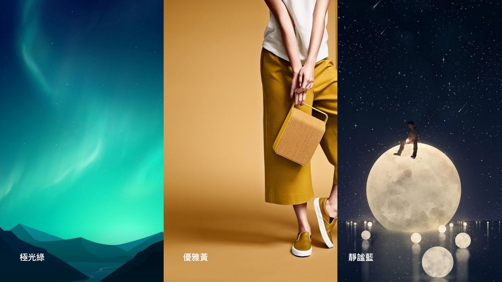
摩登・時尚・潮流
大圓角、色塊構成的扁平化介面，呈現年輕潮流的活力感。
品味・中性・優雅
小圓角、細線條，大量黑白灰點綴金色，展現沉穩內斂的品味感。
自然・和諧・靜謐
影像搭配細線條與透明堆疊，營造靜謐都市中的一席之地。
配色 A・極光綠
極光綠取材自「看見極光就會帶來一輩子幸福」的古老傳說，以沉浸的綠松色調呼應在紛擾城市中找回專屬睡眠之地的渴望；介面採大圓角與色塊構成的扁平化風格，呈現年輕、潮流的品牌調性。
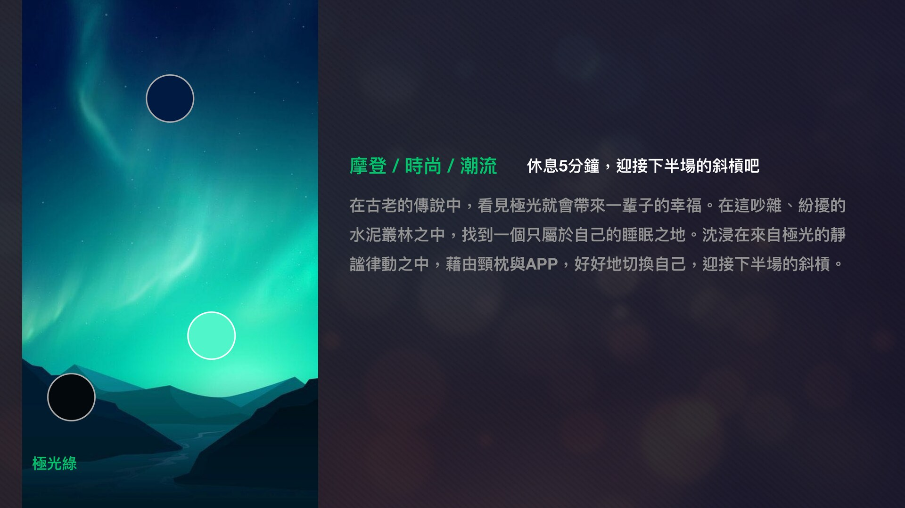
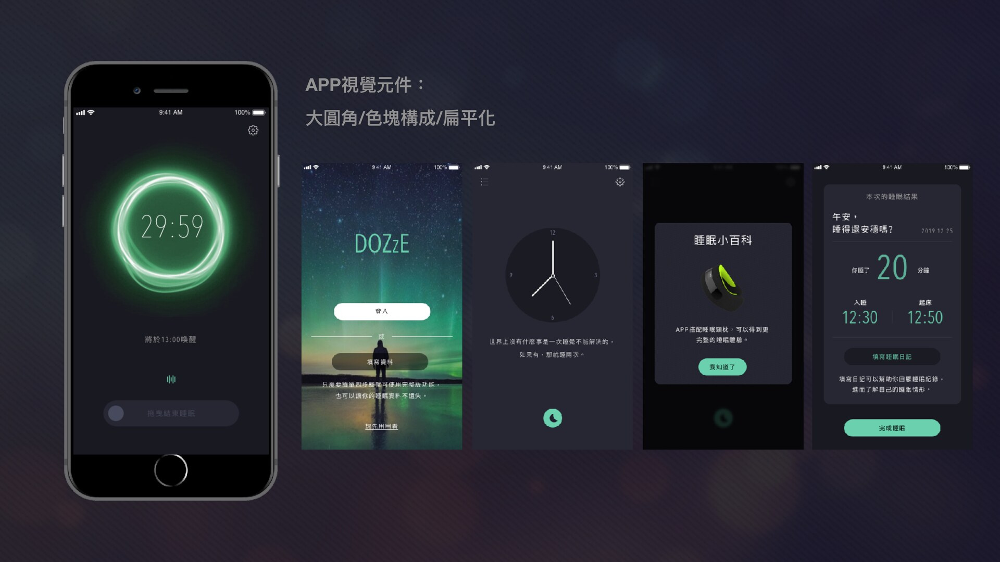
#6ACFAD
#A9D5C2
#3E635E
#243E3E
#272733
#1B1B23
以極光般的漸層綠光作為睡眠倒數的視覺焦點，搭配深色背景營造沉浸感，呼應「休息5分鐘，迎接下半場」的品牌訊息。
介面元件採用大圓角與色塊分割，降低視覺銳利度，傳遞年輕、放鬆的潮流氛圍。
配色 B・優雅金
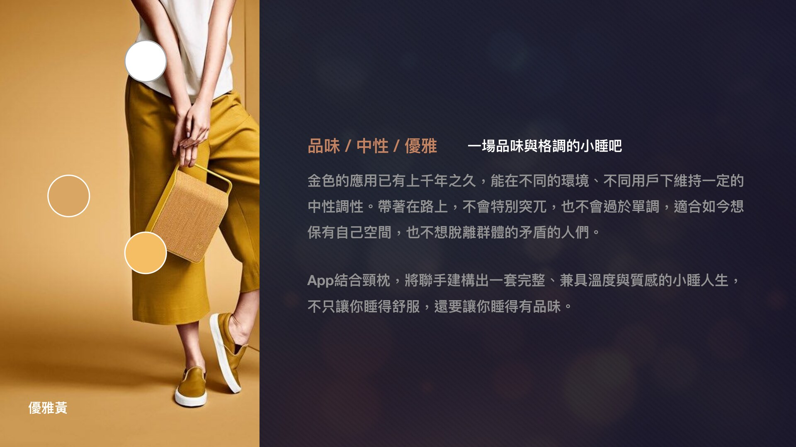
優雅金呼應金色「應用已有上千年之久，能維持中性調性」的特質，適合想保有自我風格、卻不脫離群體的都會使用者；介面改以小圓角與細線條為主，大量運用黑白灰，只在關鍵操作點綴金色，呈現更沉穩內斂的品味感。
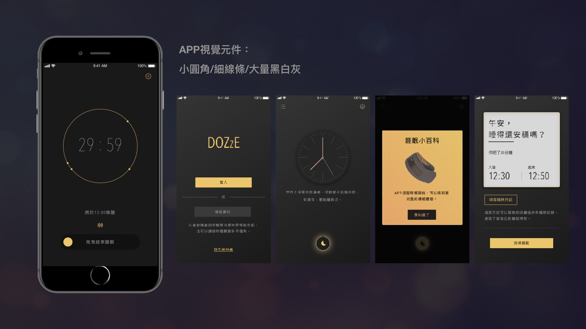
#EBC66D
#DDA267
#D6D6D6
#5E5E5E
#3A3A3A
#2A2A2A
以纖細線條取代大圓角色塊，搭配大量黑白灰底色，呈現如金飾般低調卻不失質感的視覺語言。
金色只出現在需要被強調的操作點（如喚醒按鈕、重點數據），讓畫面在沉穩之中仍保有清晰的視覺焦點。
配色 C・靜謐藍
靜謐藍取材自月夜下小男孩靜靜融入月光的畫面，傳遞「好好享受都市中的一席之地」的靜謐感；介面大量運用真實影像、細線條與半透明堆疊，讓每個畫面都像被月光包覆一般柔和。
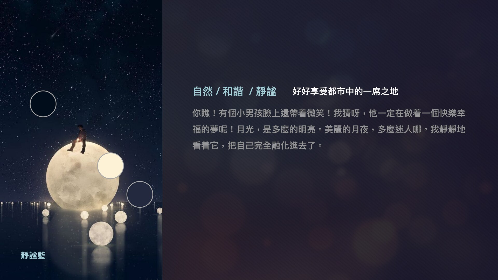
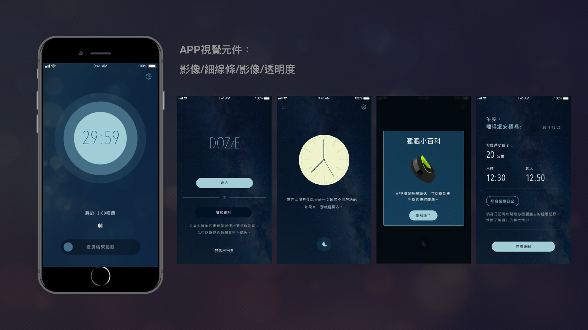
#6988C8
#345693
#A2CED7
#EFF3CB
#1D2C3C
#0F2743
以半透明的影像堆疊取代純色塊，讓夜空、月光等意象自然融入介面，增加畫面的柔和層次。
圖形元件維持纖細的線條比例，呼應「自然、和諧、靜謐」的品牌調性，避免過於銳利的視覺衝突。
配色總覽
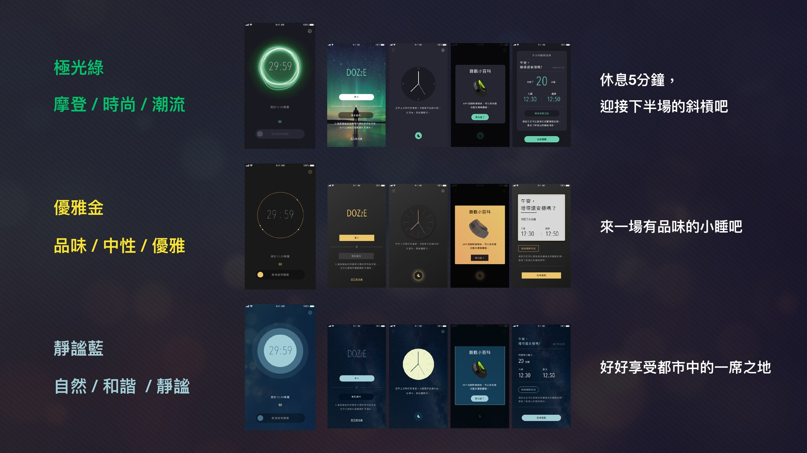
三套配色最終在同一套介面架構上並行呈現，方便向客戶端清楚比較不同情境色彩帶來的品牌感受差異。
設計心得與反思
面對軟硬整合、需從零驗證市場的內部創業挑戰，本次專案展現了獨立主導研究到介面設計的完整能力。透過質化訪談與情境洞察交叉驗證，成功將抽象的睡眠痛點轉化為具體服務體驗，也在過程中淬煉出三個對軟硬整合產品具有普遍意義的設計原則。
Systems
◆
軟硬整合的專案讓我意識到，介面設計只是體驗的一部分——頸枕的觸感、震動的時機，都跟畫面上的文字同樣重要。
Empathy
◆
田野調查中那些「脖子痠痛」「睡相被看見」的小困擾，提醒我優化的常常不是重大痛點，而是被忽略的日常細節。
Playfulness
◆
分享喚醒鈴聲的設計讓我發現，睡眠不只是私密的個人行為，適度加入一點幽默互動，也能讓產品更有溫度。